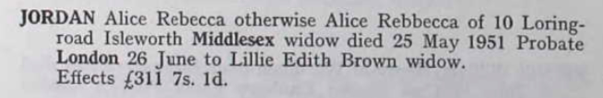
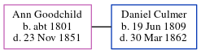

Alice Rebecca Jordan (née Deal) 1880 - 1951
[ Home ] | [ Calendar ] | [ Surnames Index ] | [ Errors ] | [ Family History ]Alice Deal, the wife of Frederick John Thomas Jordan (the second cousin twice-removed on the mother's side of Nigel Horne), was born in Chatham, Kent, England on 7 Nov 18801,2,3, was baptised in Elham, Kent, England on 12 Dec 1880 and married Frederick (a grocer's carman with whom she had 1 child, Albert Frederick) at St Luke's Church, Hammersmith, London, England on 13 Apr 19074.
During her life, she was living at 10 Loring Road, Isleworth, London on 19 Jun 19217, on 29 Sept 19391, in 19446 and in 19515.
She died on 25 May 1951 in Ealing, London, England3.
Children
- Albert Frederick was born on 17 May 1914
Citations
- 1939 Register - Findmypast (was the wife of the head of the household)
- England & Wales births 1837-2006 - Findmypast
- England & Wales deaths 1837-2007 - Findmypast
- England & Wales Marriages 1837-2005 - Findmypast
- England & Wales, National Probate Calendar (Index of Wills and Administrations),1861-1941 Online publication - Provo, UT, USA: Ancestry.com Operations Inc, 2010.Original data - Principal Probate Registry. Calendar of the Grants of Probate and Letters of Administration made in the Probate Registries of the High Court of Justice in England. Londo
- From her husband's probate record.
- 1921 Census Of England & Wales - Findmypast (was age 40 and the wife of the head of the household)
Media
Alice Tayler - Probate

England & Wales marriages 1837-2005 - BMD/M/1904/1/AZ/000251/111
England & Wales Deaths 1837-2007 - BMD-D-1951-2-AZ-000521-080
England & Wales marriages 1837-2005 - BMD/M/1907/2/AZ/000097/188
England & Wales births 1837-2006 - BMD/B/1880/4/AZ/000140/331
Family Tree
Map
Generated by ged2site. Last updated on Jul 3, 2024
Known Issues
Baptism information not used to determine a parent
No records of living with anyone